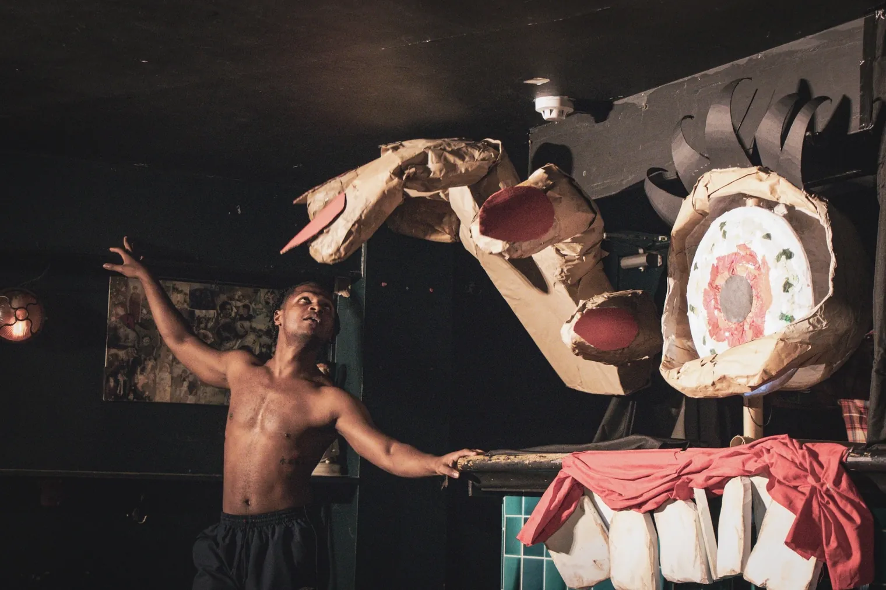
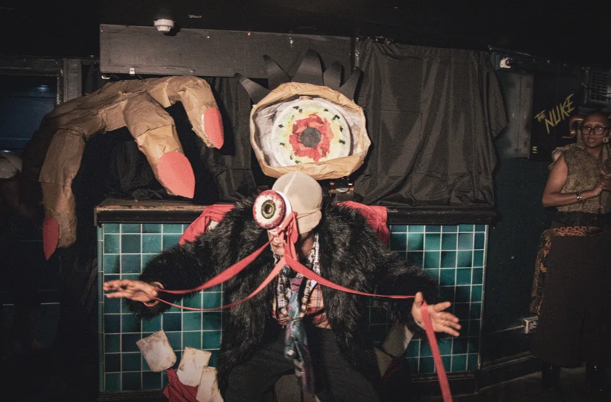
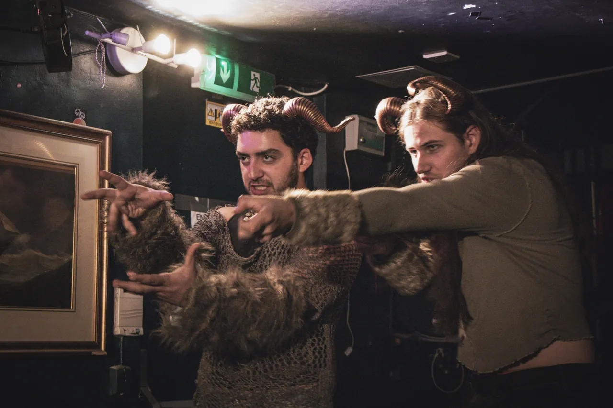
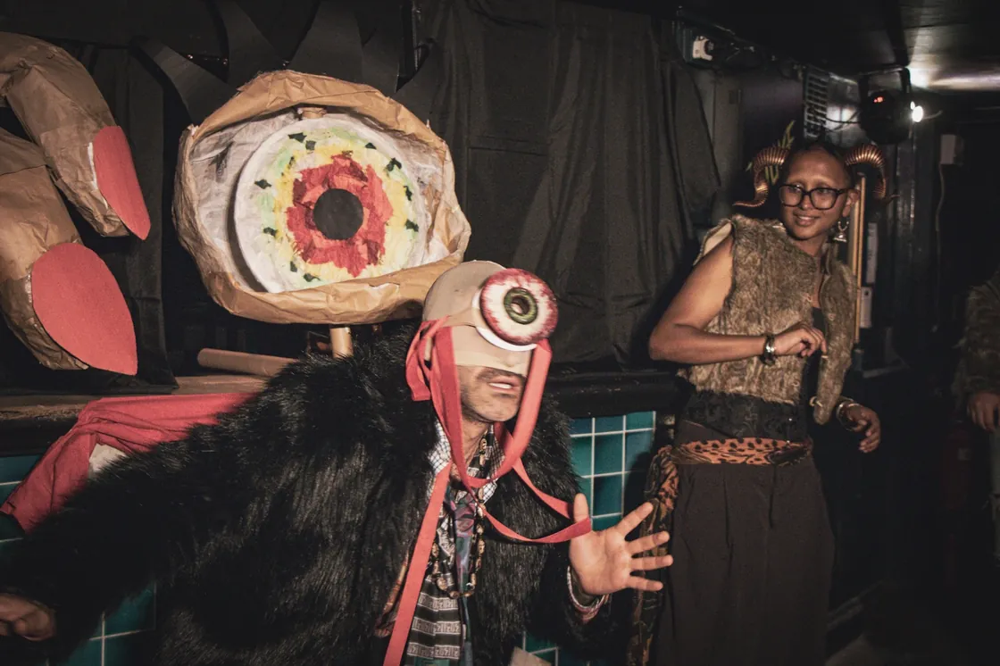
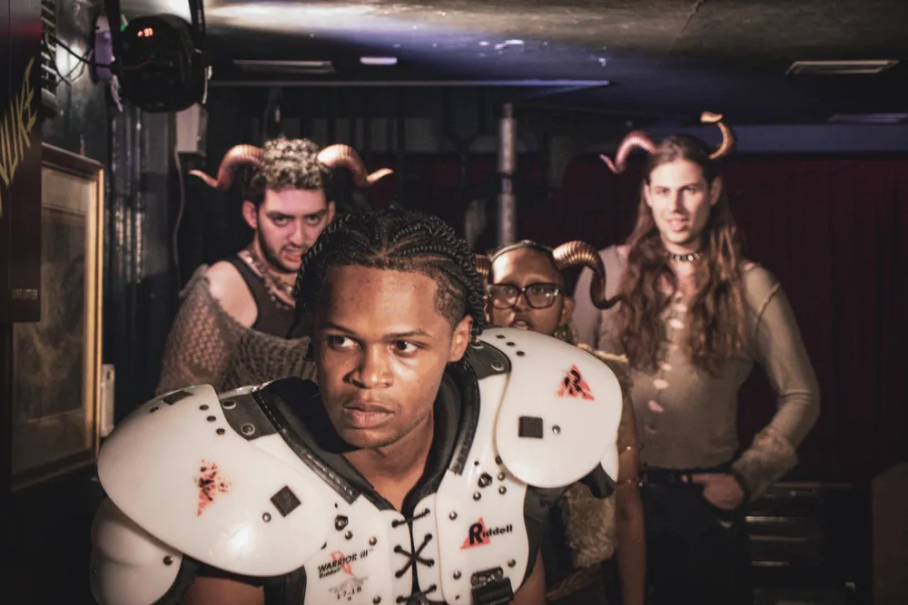
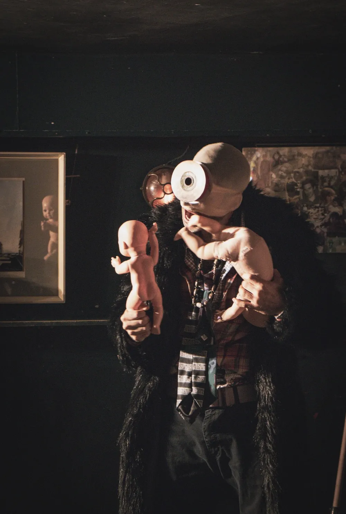

THE
CYCLOPS
OF EAST
LONDON.
EURIPIDES GOES EAST. THE PUB WILL NEVER BE THE SAME.
A MYTH.
A CAVE.
A VERY BAD NIGHT.
A Dionysian reimagining of Euripides' satyr play that brought an unruly ensemble into the streets and pubs of East London.
Odysseus and his crew — strangers washed into a new world — meet satyrs, wine, a one-eyed Cyclops and an audience invited into the action. The production collided ancient myth with the immigrant experience, assimilation, decadence and the absurdities of belonging.
Beginning around Broadway Market and moving into Off Broadway Bar, the performance transformed local public space into an unfolding theatrical encounter.
THE CAVE
COMES ALIVE.
Moments from the performance at Off Broadway Bar, East London.






“Where art and quotidian life coexist.”
There was no safety of the proscenium. The streets, the pub, passersby and patrons were all part of the world of the play.
THE PEOPLE
WHO MADE IT.
CREATIVE TEAM
- Director
- Mark Diaz
- Assistant Director
- Ophelia Fellhauer
- Costume & Puppet
- Haejin Lee
- Associate Designer
- Jae You
- Puppet Builder
- Andred Rhys
CAST
- Odysseus
- Kenndrick Horton
- The Cyclops
- Tarak Ojaghi
- Silenus
- JP O’Brien
- Satyrs
- Stian Jebsen, Megha Thyagarajan & Firas Sebaaly
This page documents a completed production. No future performances are currently announced here.